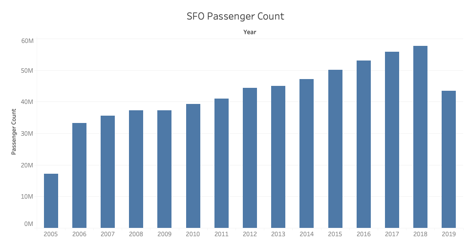

This barchart visualization is to view the trends of total passengers flying through SFO Airport from 2005 to 2019 (as of February 2020).
Wrangling
For this bar chart the data was filtered using Activity Period and Passenger Count from Data SF.
The used .csv file can be found here.
Tableau

d3.js
Data set was taken from Data SF and shows the Air Traffic Passenger Statistics for the San Francisco international airport.
Data period from July 2005 to September 2019 (as of this date in February 2020)
Analysis
Passenger count is encoded as the length of a bar thus longer bars represent higher passenger count.
Date/Year is represented as the x-axis, so time period can be observed linearly.
From this bar chart we can see that flights in SFO has been incrementing at a steady rate each year.
Two conclusions that can be made from this data. First, the spike downwards from 2019 can be caused by higher price rates airlines sell.
Second, SFO has become a major node in the plane transit ecosystem as it takes part of the silicon valley tech hub.
Puzzle solver, Reddit surfer (and my only source for cooking recipes).
Passionate about building and working with Robotics, aiming to learn all about CS to integrate AI into Robotics.